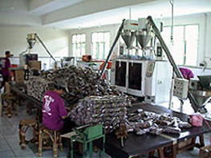
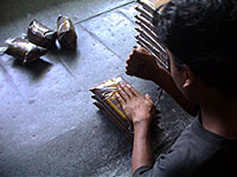
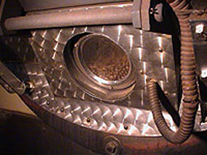
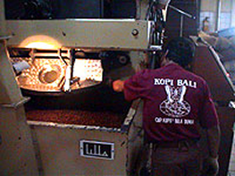
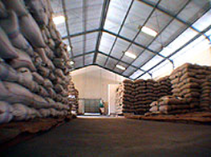

Sejarah Bhineka Djaja
The Legend From Bali
Kopi, seperti tembakau dan anggur, memiliki sejarah lama dengan karisma khusus, tidak hanya karena selalu melibatkan banyak orang dalam pemrosesan dan menciptakan peluang kerja, tetapi juga karena banyak citarasanya. Kopi telah menjadi ritual bagi banyak orang di seluruh dunia.

Selera kopi tergantung pada di mana ia ditanam dan bagaimana kopi diproses dan dipersiapkan. Karena itu, sebelum disajikan, kopi harus melalui pemrosesan yang panjang dan resep khusus membantu menghasilkan rasa yang luar biasa.
Keluarga Tjahjadi, misalnya, memulai bisnis kopi mereka di Bali sekitar tahun 1935. Para Tjahjadi memulai bisnis kopi mereka dengan membeli biji kopi dari petani, mengolahnya, Galeri dan menjualnya di toko mereka 'Bian Ek' di Jalan Gajah Mada, sebuah bisnis pusat di jantung kota Denpasar.
Keluarganya telah menghasilkan kopi dengan rasa yang unik, dan kopi Bali Bian Ek telah menjadi kopi favorit bagi masyarakat Denpasar. Meskipun bisnis keluarga tumbuh dengan baik, mereka tidak pernah puas dengan upaya mereka, dan terus meningkatkan proses dan metode pelayanan Kopi Bali. Hasilnya, Kopi Bali Bian Ek telah menjadi minuman berkualitas tinggi.

Bian Ek, generasi pertama, adalah putra yang digantikan oleh generasi keluarga kedua, dan Bian Ek Bali Coffee menjadi kopi nomor satu di pulau itu. Mr Djuwito Tjahjadi yang membawa bisnis ke dunia baru di mana mesin pengolah kopi modern dan teknik pemasaran diperkenalkan.
Selain menggunakan mesin pemrosesan baru dan menerapkan metode distribusi modern, keluarga terus mempromosikan kopi mereka dari unit pemrosesan yang bersih dan efisien, di mana kebersihan terjamin.

Segera bisnis kopi diserahkan kepada generasi ketiga dalam bentuk Wirawan Tjahjadi, salah satu putra Pak Djuwito. Di bawah Pak Wirawan bisnis ini telah mengalami pertumbuhan yang signifikan dan memperluas operasinya secara signifikan. Coffee Bali kini telah memasuki pasar internasional melalui desain kemasan khusus. Ini tersedia di Toko Bebas Pajak dan juga kafe dan hotel berbintang di seluruh Indonesia.

Pemasaran bisnis telah menjadi lebih banyak tantangan karena persaingan yang lebih ketat dan media promosi yang canggih. Namun, Kopi Bali telah berhasil tetap kompetitif di pasar kopi internasional. Pertumbuhan pesat di kopi Bali dimungkinkan karena kualitas produk serta banyaknya pelanggan, warung, hotel berbintang, dan toko bebas bea yang menganggap Kopi Bali sebagai pilihan pertama mereka.
Keberhasilan besar bisnis ini juga berkat komitmen keluarga untuk pemrosesan yang berkualitas dan meningkatkan rasa kopi mereka. Ini membuat mereka pantas mendapat julukan "The Legend". Terlebih lagi, gerai kopi awal mereka BIAN EK, yang telah dinamai kembali menjadi BHINEKA JAYA, masih ditemukan di Jalan Gajah Mada, Denpasar.

Pengalaman dan perkembangan ini telah menyebabkan Kopi Bali mengembangkan "one stop coffee shopping" di Bali Coffee House. Rumah ini tidak hanya menjual beragam kopi dari Bali, Jawa, Toraja, Mandailing, dan banyak daerah lain di Indonesia, tetapi juga dari Columbia, Kenya, Italia, dan banyak negara lainnya.
Rumah itu juga menjual berbagai jenis mesin kopi, cangkir roaster, dan barang kopi lainnya. Akhirnya, ada juga kafe kelas kopi.